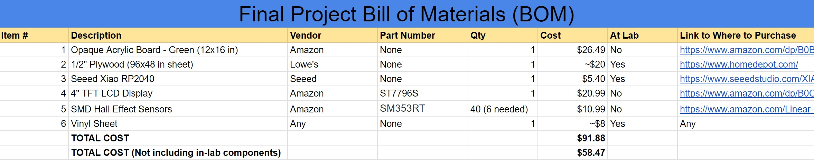

16. Applications and Implications¶
This week I worked on formalizing the requirements and specifications of my final project.
Design¶
My final project will consist of a wooden board that is about 16” x 24”, with a depth of about 4”. It will be hollow in order to allow storage of electronic components inside. Embedded in the top piece of wood will be an acrylic cutout of Guam, and on it will be visual representations of different locations. There will also be a TFT screen embedded on the top. There will also be a separate piece in the shape of a latte stone with an embedded magnet.
Functionality¶
When the main board is given power, it will check if the piece is placed on any of the locations via magnetic hall sensors placed below the acrylic. Depending on the location where the piece is placed, the screen will display an image and description of that location and some of the local legends.
What Has Been Done Beforehand?¶
One project that is very similar to mine is Elaine Liu’s final project. It consists of a map of the world with sensors such that when they are pressed, display the continent name and pictures of a sister school in that continent. This project has been a constant help throughout the development of my project since it has many similar elements and processes involved.
What Will I Design?¶
I will design the main PCB which will hold the ATTiny1614 and Xiao RP2040, as well as the breakout boards to contain the hall effect sensors. I will cut out the acrylic design and design the path to make the main box. I will be making the different labels. I will write the text for each location, but the images will be obtained from various sources with permission.
Materials and Components¶
Involved Components¶
The primary board will be made of plywood, and the cutout of guam will be made of green acrylic. In terms of electronics, the project will include a TFT screen, Xiao RP2040 as the main board, 6 hall effect sensors (changed to 4), an ATTiny1614 for sensors, wires for connecting the components, and a AA battery pack for power. It will also have PCBs to contain the mentioned chips. The latte stone piece will be 3D printed, and there will be an embedded magnet.
Where Will They Come From?¶
The plywood might be able to come from the lab, but it can also be obtained from a local Lowe’s hardware store. The acrylic will be ordered from Amazon, as well as the TFT screen. Our lab contains Xiao RP2040 chips and ATTiny1614s as well, so that will be able to be obtained easily. Our lab also has wires and battery packs. The PCBs can be designed with milling machines in the lab.
Costs¶
Here is my final project Bill of Materials, which is also linked on my final project page.

Projected cost including components in lab: $91.88
Projected cost without components in lab: $58.47
Processes Used¶
- Cutting with ShopBot CNC Machine: Making the Wooden Frame and Guam outline
- Milling Machine: Creating PCBs for different chips
- 3D Printing: Creating the latte stone piece
- Laser Cutting: Engraved title on top and cutting acrylic
- Vinyl Cutting: Creating labels for each location
Questions Left¶
I was able to talk with Dr. Adam Harris, who provided insight into how I should handle the electronics for my project. I need to figure out how networking with SPI works since the TFT screen I selected uses it. Also, I need to determine ways to affix the acrylic cutout of Guam, the screen, and the sensor board to the top of the wooden frame.
How Will It Be Evaluated?¶
The project will be successful if it is able to display the correct image and text for each location on the screen for each of the sensors in a reasonable amount of time. It should not display any new locations if the piece is placed on none of the sensors. Also, the latte stone piece should be the only thing that triggers the sensors (except for other magnetic objects). The locations on the map should be easily identified and be correctly placed above their respective sensors.